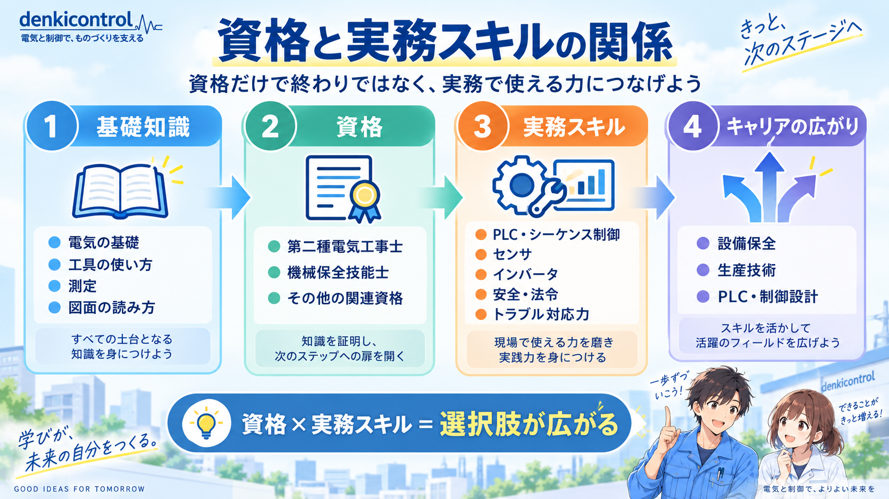
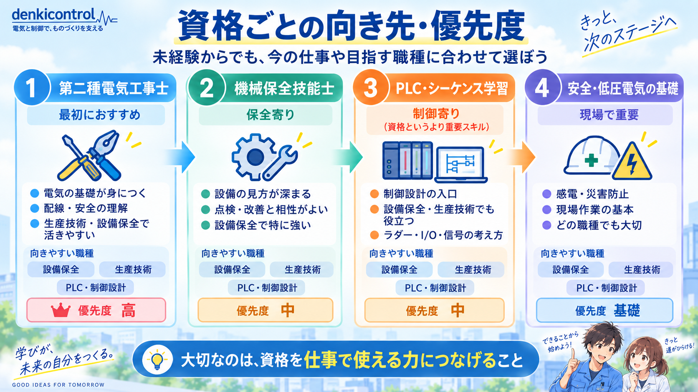

資格と実務スキルは「セット」で考える
電気・FAの仕事では、資格を取っただけで設備を設計・保全できるわけではありません。反対に、実務経験だけで基礎知識が曖昧なままだと、安全や理屈の理解でつまずくことがあります。
おすすめは、基礎知識 → 資格 → 実務スキル → キャリアの広がりという順番で考えることです。

最優先は「資格」より先に基礎を固めること
電気の基礎
電圧・電流・抵抗、DC24V、接地、短絡・過電流など、設備を見るための基本を押さえます。
安全・法令
感電防止、設備停止時の安全確認、低圧電気の取扱い、非常停止、安全回路など、現場で最優先になる考え方です。
図面の読み方
電気図面、端子台、I/O、機器記号を追えるようになると、故障切り分けや制御設計が進めやすくなります。
工具・測定
テスター、圧着、配線、導通確認など、実際に確認するための手順を身につけます。
未経験なら、いきなりPLCの難しい命令や上位資格へ進むより、設備を安全に見て、図面と実機をつなげられる基礎を先に作る方が実務につながりやすいです。
資格は「目指す仕事」と相性で選ぶ
資格の価値は、難易度だけでは決まりません。今の仕事や、これから目指す職種で使いやすいものから選ぶ方が効果的です。

第二種電気工事士
電気の基礎、配線、安全を体系的に学ぶきっかけにしやすく、設備保全・生産技術・制御設計の土台づくりに役立ちます。
ただし、第二種電気工事士が対象とする電気工事は主に一般用電気工作物等です。工場などの自家用電気工作物では、作業内容により第一種電気工事士や認定電気工事従事者など別の資格・認定が必要になる場合があります。資格名だけで「工場の電気工事を全部できる」と判断しないことが重要です。
機械保全技能士
機械保全技能士は、設備のメンテナンスに関する技能を評価する国家検定の技能検定です。
設備保全を目指す人と特に相性が良く、点検・保全・故障診断の考え方を整理する助けになります。生産技術や制御設計でも、設備の壊れ方や保全性を考える視点は役立ちます。
PLC・シーケンス制御
資格名よりも、I/O、ラダー、インターロック、センサ、インバータ、サーボなどを実機やシミュレータでつなげて理解する方が重要です。制御設計を目指すなら優先度は高めです。
職種ごとに伸ばしたいスキルは少し違う
設備保全
安全、図面、測定、機械・電気の故障切り分け、PLCモニタ、予防保全を広く伸ばします。
生産技術
工程理解、設備仕様、治具・改善、設備導入、品質・タクト、FA機器の知識をつなげます。
PLC・制御設計
電気回路、I/O、PLC、HMI、インバータ、サーボ、安全、試運転、現地調整へ担当範囲を広げます。
共通して重要
安全、報告・記録、原因切り分け、図面を読む力、分からないことを調べて検証する力はどの職種でも重要です。
未経験からのおすすめ学習順
- 安全・電気の基礎を理解する
- 工具・測定・図面に慣れる
- センサ・モータ・空圧など設備の構成要素を知る
- PLC入出力とラダーを実機の動きと結びつける
- 故障切り分け・改善を経験する
- 仕事に合う資格や専門スキルを追加する
この順番なら、資格の勉強と現場の経験がばらばらになりにくく、覚えた内容を仕事で使いやすくなります。全部を一度に覚えるより、基礎 → 実機 → 振り返りを繰り返す方が定着しやすいです。
資格を取れば転職で有利になる？

資格をたくさん取れば、未経験でもすぐ評価されますか？

資格は学習や技能を示す材料にはなるけど、それだけで実務経験と同じにはならないよ。何を学んで、現場でどう使えるかまで説明できると強いね。
じゃあ、資格の数より「できること」を増やす方が大事なんですね。
そう。資格とスキルをセットで積み上げていこう。
まとめ
電気・FAエンジニアの成長では、資格の数より、基礎知識・資格・実務スキルがつながっていることが重要です。
未経験なら安全・電気・図面・測定から始め、仕事に合わせて第二種電気工事士、機械保全技能士、PLC・シーケンス制御などを積み上げると、設備保全・生産技術・制御設計へ選択肢を広げやすくなります。
まだ職種を決め切れていないなら
3職種の違いと未経験からの入り方を先に比べると、学ぶ順番を決めやすくなります。